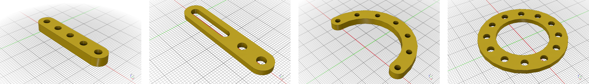
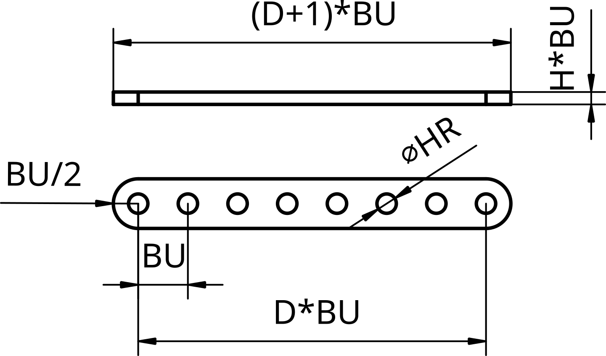
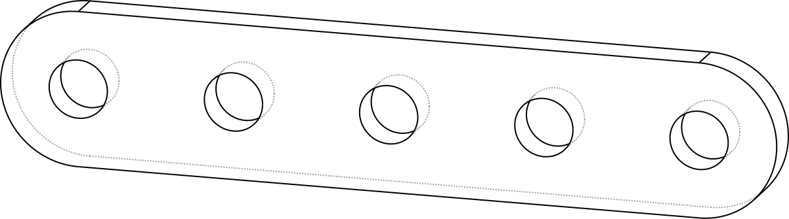
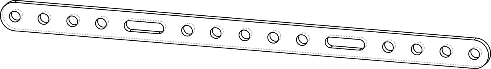
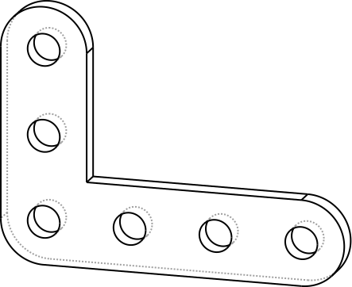
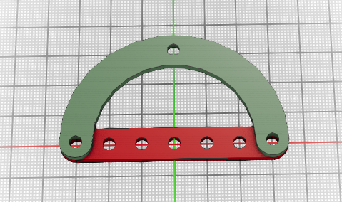
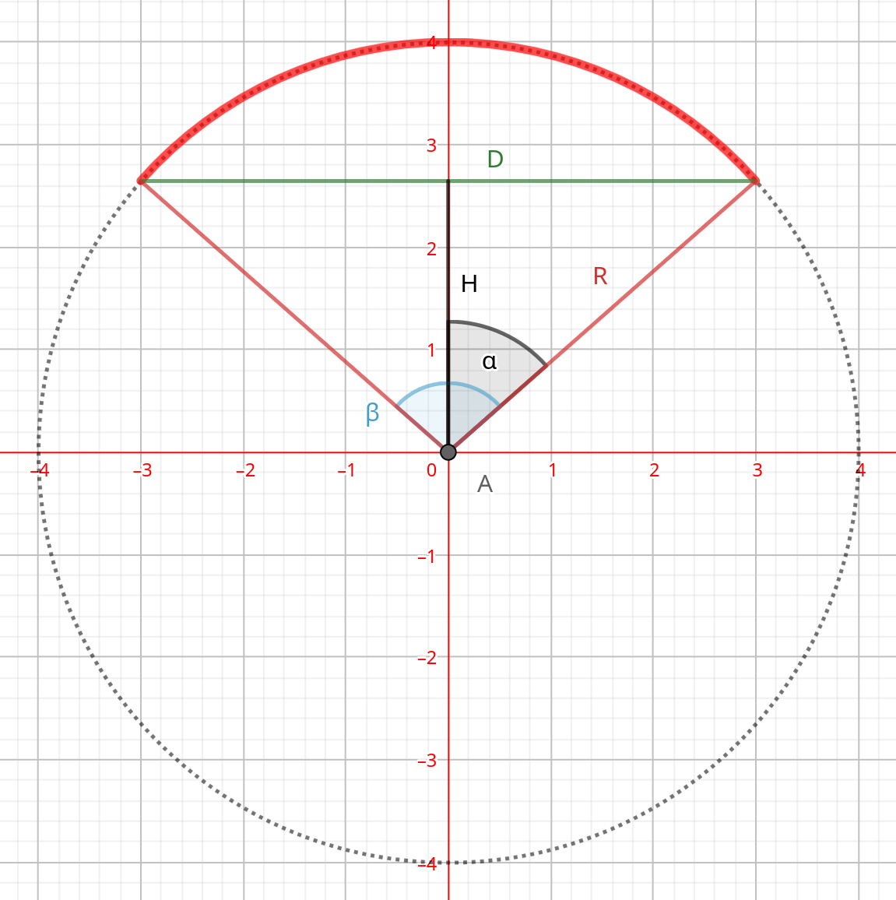
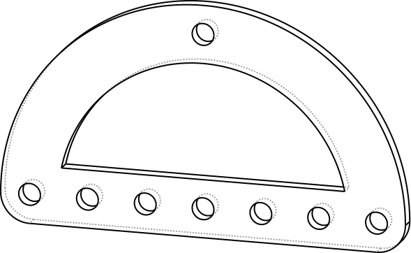

Spojky #

{kind=link}

Spojky (Brace) sú základným konštrukčným typom dielov v Stemfie-X primárne určený pre spájanie dielov, ale je možné ich využiť aj ako konštrukčný prvok na vytváranie vystužených konštrukcií ako sú ramená žeriavov, robotov a pod. Spojky môžu obsahovať montážne otvory ako aj štrbiny. Štandardná hrúbka spojky je 1/4 BU (2.5mm), pomocou knižnice je možné programovo vytvárať spojky rôznych tvarov a konfigurácií. Lineárna spojka je rozmerovo kompatibilná s kovovými spojkami stavebníc Meccano a Merkur so vzdialenosťami montážnych otvorov 10mm.
{kind=link}

Obr. 29 Základné parametre spojky (spojka, D=8, H=1/4).#
Knižnica #
Pomocou knižnice môžeme vytvárať záladné typy spojok a pomocou logických operácií aj odvodené modifikácie. Základným typom je lineárna spojka Brace, oblúková spojka Brace_Arc, kruhová spojka Brace_Circle a rozšírená spjka Brace_Plate. Funkcie pre generovanie spojok majú formát:
Brace(size, height, holes, center, hole_rad)
Brace_Arc(radius, angle, height, num_holes, center, hole_rad)
Brace_Circle(radius, height, num_holes, center, hole_rad)
Brace_Plate(x, y, height, holes, center, hole_rad)
Parametre Default Popis
--------------------------------------------------------------
size 1 rozmery v počte otvorov
height 1 výška
length 1 dĺžka
radius 5 polomer
holes True lineárna spojka / platňa s otvormi / bez otvorov
num_holes 4 počet montážnych otvorov
angle 180 uhol v stupňoch
center True poloha v strede súradnicovej sústavy
x 3 rozmer v smere osi X
y 3 rozmer v smere osi Y
hole_rad HR_BASE polomer všetkých otvorov (HR_BASE, HR_AXIS) alebo v BU
Značenie dielov #
Pre prehľadnejšie označovanie spojok v zoznamoch dielov a katalógoch je vhodné tieto označovať kódmi, ktoré označujú ich parametre. Mená štandardných spojok sú generované automaticky pri ich vytváraní.
brace_t_dd_hh_pp_ss[s] basic form
brace_t_dd_hh_pp abbreviated forms, unlisted parameters have default values
brace_t_dd_hh
brace_t_dd
t - brace type dd - brace size hh - brace height
B - simple brace 01 ... 99 BU 01 = 1 BU
C - circle brace ...
A - arc brace 10 = 10 BU
P - brace plate 12 = 1/2 BU
X - user defined non standard brace 14 = 1/4 BU
ss - number of slots pp - number of holes if it does not match the size
00 ... 99 00 ... 99
brace_B_dd_hh_pp_ss
dd - brace size
pp - number of holes
ss - number of slots
brace_C_dd_hh_pp_ss
dd - brace radius
hh - brace height
pp - number of holes
ss - number of slots (TODO, not implemented)
brace_A_dd_hh_pp_sss
dd - brace radius
hh - brace height, default value is 1/4 BU
pp - number of holes
sss - brace angle in [deg] 001 ... 180
brace_P_xx_yy_hh
xx - brace plate x size
yy - brace plate y size
hh - brace plate height, default value is 1/4 BU
Príklady použitia #
Jednoduchá spojka #
Pre vygenerovanie jednoduchej spojky o štandardnej hrúbke 1/4 BU je postačujúce zadať jej rozmer v BU jednotkách.
from lib import *
b1 = Brace(5) # brace_B_05_14
b1.export_step(b1.name) # export spojky vo formate step
{kind=link}

Obr. 30 Jednoducha spojka#
Spojka so štrbinami #
Štrbiny požadovanej dĺžky vytvoríme pomocou triedy Hole_Slot, posunieme ich pomocou operátora BU_Tx do požadovanej pozície a pomocou operátora D() odpočítame od štandardnej spojky.
from lib import *
b2 = Brace(17) # standardna spojka
h1 = Hole_Slot(2).BU_Tx(4) # strbina a jej posun dpo vzdialenosti BU=4
h2 = h1.copy().BU_Tx(7) # kopia strbiny a posun o dalsich 7 BU
b2.D([h1, h2]) # odpocitanie strbin od zakladnej spojky
# export spojky - dlzka 17 otvorov, hrubka 1/4 BU,
# 13 otvorov, 2 strbiny
b2.export_step('brace_B_17_14_13_02')
{kind=link}

Obr. 31 Spojka so štrbinami.#
Uhlová spojka #
Uhlovú spojku vytvoríme operáciou zjednotenia dvoch štandardných spojok.
from lib import *
b3 = Brace(4) # standardna spojka
b4 = Brace(3).Rz() # spojka otocena o 90 stupnov
b3.U(b4) # zjednotenie
# export uzivatelsky definovanej spojky
b3.export_step('brace_X_03_04_14')
{kind=link}

Obr. 32 Uživateľsky definovaná uhlová spojka.#
Oblúková spojka s tetivou #
Pri oblúkovej spojke musí mať tetiva oblúku veľkosť v násobkoch BU. Pre výpočet parametrov oblúkovej spojky zadáme dĺžku tetivy a polomer oblúka, napríklad
radius = 4 BU
brace length = 7 BU
{kind=link}

Obr. 33 Oblúková a lineárna spojka#
Z uvedených parametrov musíme pre konštrukciu spojky výpočítať uhol a offsetu voči stredu opísanej kružnice podľa obrázku
{kind=link}

Obr. 34 Veličiny pre výpočet oblúkovej spojky#
Vstupnými hodnotami pre výpočet sú
\(R\) - circle radius, in BU units
\(D\) - chord length in BU units, D >= 2*R+1
Výstupnými hodnotami sú
\(\beta\) - calculated angle
\(H\) - calculated offset
Konštrukcia oblúkovej spojky na základe výpočtu
from numpy import arcsin, pi
R = 3 # arc radius
D = 7 # D >= 2*R+1
N = 3 # pocet otvorov
alpha = arcsin( (D-1) / (2*R ) )
beta = 2*alpha/pi*180
H = R*cos(alpha)
b3 = Brace_Arc(R, bdeg, 1/4, N, center=True).Rz(90-bdeg/2).BU_T([0, -H, 0])
b4 = Brace(D, center=True).BU_Tz(-1/2)
{kind=link}

Obr. 35 Oblukova spojka s tetivou.#